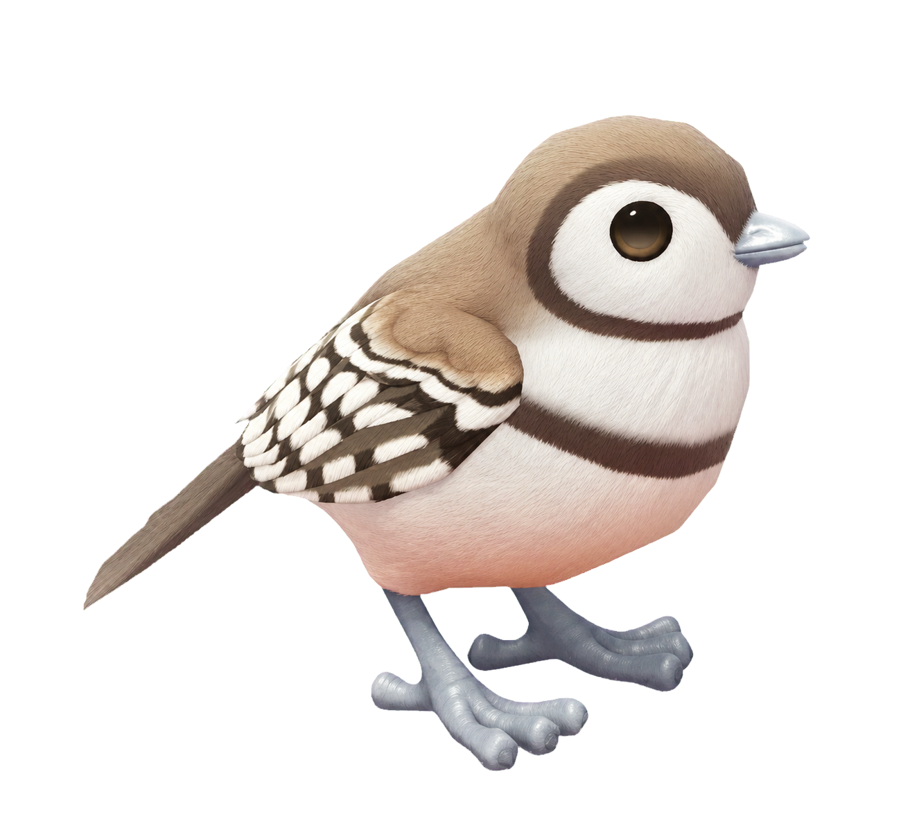

Fiche oiseau Heartopia
Diamant mandarin
Double-Barred Finch
Dans Heartopia, Diamant mandarin se trouve à Village de pêcheurs - Phare. Cette fiche indique sa météo, ses horaires et le niveau de passion nécessaire.
- Zone
- Village de pêcheurs - Phare
- Météo
- toute météo
- Horaire
- toute la journée
- Niveau de passion
- 3
- Catégorie
- Passereaux